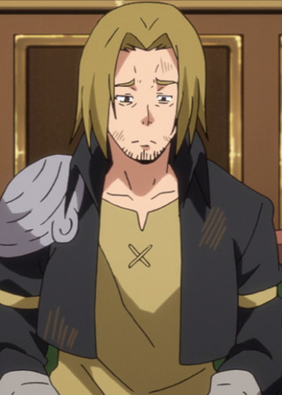

Kengo Takanashi is a Japanese voice actor. He is affiliated with Arts Vision. He voiced Hajime Nishikawa in Silver Spoon and Haruto Amo in Seven Senses of the Reunion.
- Gender: Male
- Birthday: June 12
- Hometown: Tokyo, Japan

|
|---|
| |
Kengo Takanashi is a Japanese voice actor. He is affiliated with Arts Vision. He voiced Hajime Nishikawa in Silver Spoon and Haruto Amo in Seven Senses of the Reunion.
|
|---|
|  | Cabal | That Time I Got Reincarnated as a Slime | Cabal is the leader of adventure's party, where he serves as the 'fighter' role. He enjoys goofing off, but polite when working. He has the tenedency to show off and became cocky as the team's leader at the wrong time. |
Go Back to Main Page |
Go Back to Homepage |
|
|
|
OR |
|